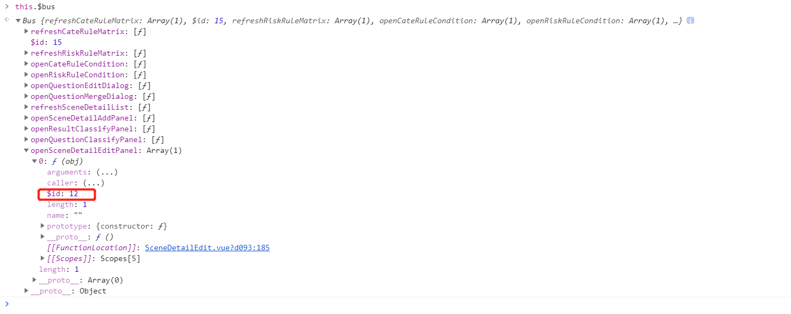

EventBus在typescript中的使用埋坑
EventBus又称事件总线，在vuex出现之前一直是作为组件之间（尤其是兄弟组件之间）进行数据通讯的工具。
常规Vue框架中EventBus的使用
初始化方式
方法一：
1 | //初始化时 event-bus.js |
方法二：
1 | //main.js |
引入typeScript的Vue框架中EventBus的使用
typescript的引入可以在npm中找到方法，这里我们简单给出示例即可
安装
1 | npm i -S vue-bus-ts |
初始化
1 | import Vue from 'vue'; |
用法
与常规相似，包含$emit,$on,$off,$subscribed四个方法,我们去查看vue-bus-ts的定义可知：
1 | export declare class Bus { |
这里我们以一个示例来使用这四个方法，一边加深对其的理解：
组件A
1 | private created() { |
组件B
1 | private openAddSceneDtailDialog(): void { |
坑点一：通过上面的示例可以看到，我们在每次进行绑定事件之前，都做了一步判定该事件是否已绑定过的操作，如果已绑定过同名事件，则先对其进行解绑，然后再次绑定。这是因为该事件的绑定不会随着组件的销毁而自行移除，必须使用$off()方法进行解绑，否则就会重复绑定，导致$on()的后续逻辑多次触发，造成不明的问题。

坑点二：另外，我们需要对$off()方法做一个说明，通过上面源码我们知道，该方法有两个参数，一个即事件名称，另一个则是number类型的id值。每一个注册在事件总线的事件，都会生成一个独有的$id属性，而进行解绑时，不但要传事件名称，还要传这个$id值，才能达到事件移除的目的。
1 | let $id = this.$bus.eventName[0].$id; //事件$id值的获取方式 |